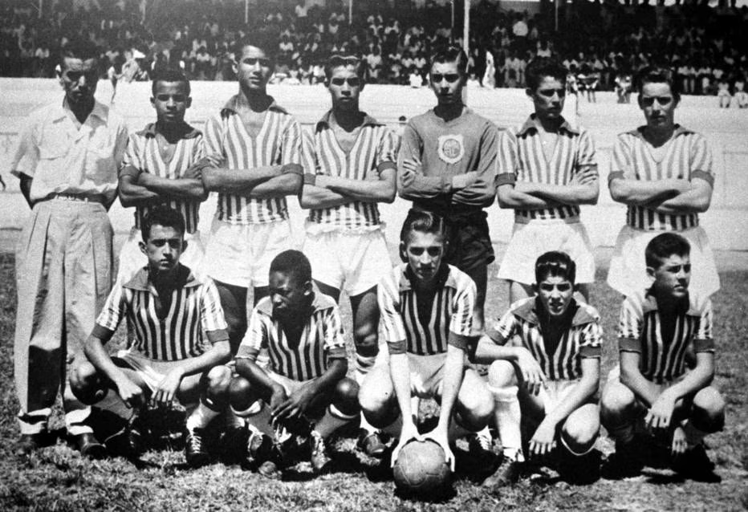

Edson Arantes do Nascimento, o Pelé.
O maior de todos os tempos, o jogador que parou uma guerra.

Aos 14 anos, Pelé foi campeão invicto pelo time juvenil do Bauru Atlético Clube, o Baquinho, e pela primeira vez sua foto foi publicada em um jornal de grande circulação, A Gazeta Esportiva. (Pelé é o segundo da esquerda para a direita, agachado, São Paulo, Bauru, 10/02/1954. Foto:Acervo/Estadão